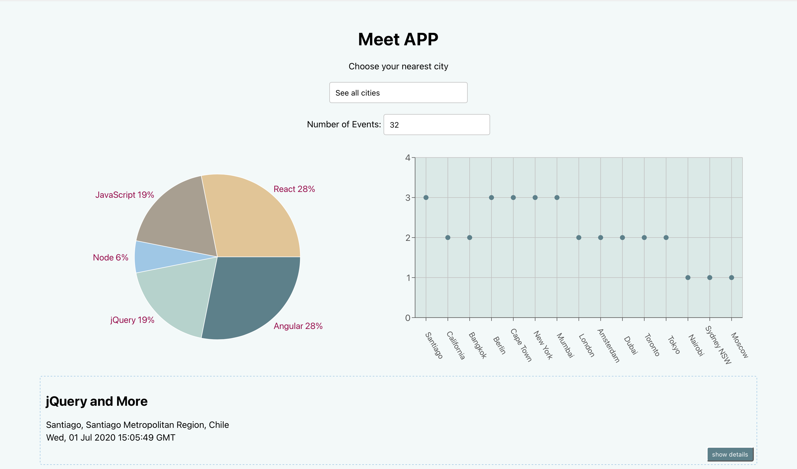

Meet App
Description
- a serverless, progressive web application (PWA) with React using a test-driven development (TDD) technique. The application uses the Google Calendar API to fetch upcoming events.
Key Features
● Filter Events by City
● Show/Hide Event Details
● Specify Number of Events
● Use the App When Offline
● Add an App Shortcut to the Home Screen
● Display Charts Visualizing Event Details.
Technologies
- a React application
- built using the TDD technique
- using the Google Calendar API and OAuth2 authentication
flow
- using serverless functions - AWS lambda - for the
authorization server instead of using a traditional server
- hosted in a Git repository on GitHub and deployed on Github
Pages
- passes Lighthouse’s PWA checklist
- works offline or in slow network conditions with the help of a
service worker
- users may be able to install the app on desktop and add the
app to their home screen on mobile
- implementing an alert system using an OOP approach to
- making use of data visualization
- covered by tests with a 90% coverage rate
- monitored using online performance monitoring tool - Atatus